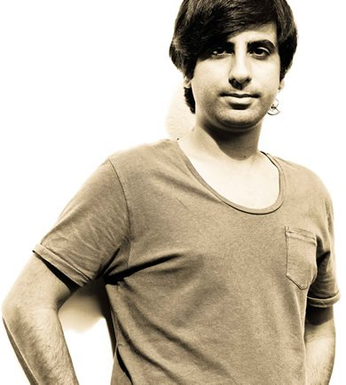

Compilation of the Month: Watergate 17: Pan-Pot


Beyond their status as one of the key artists on Anja Schneider’s Berlin-based Mobilee label for the past decade, techno soul brothers Pan-Pot have another major Berlin connection, in the form of the city’s famous Watergate club. A long-running residency has seen Tassilo Ippenberger and Thomas Benedix regularly taking over the main floor for all-night marathons, and curating several “Invites…” parties that have seen them welcome Carl Cox among others, plus headlining one of Watergate’s recent open-air summer events.
They’re a natural choice then for ‘Watergate 17’, the next installment of the club’s mix series that has been host to the likes of Solomun and Tiefschwarz in the past. And it’s a varied affair that very much captures flow and movement of one of their extended sets at the club.
Telling a story over 19 tracks, with six of those exclusives for release of Watergate Records, it starts out with some deeper, housier cuts, before moving into the more bangin’ territory we’d associate with a peaktime Pan-Pot set. The latter act of the mix dives into the deeper techno, before rounding it off on a progressive note, with one of their own tracks produced alongside Vincenzo; one of several interesting collaborations you’ll hear on ‘Watergate 17’.
With the mix due for release later this month, and Pan-Pot scheduled for a supporting club tour, I Voice had a chat to find out a few more details about our Compilation of the Month for October.
We are happy that we got all tracks that we asked for, and of course especially about the collaborations that we did with Slam and Vincenzo, and the exclusive tracks that we got from Martin Eyerer, Clint Stewart and Stephan Hinz... How were you selected to mix this compilation?
Thomas: The guys from Watergate and us, we have quite a long and close relationship, and we don’t only have our regular events there but we also count them to our friends. So it was only a question of time that we also work together on a compilation.
Tell us about how you selected the tracks for this compilation, was there a process and how long did it take? Were there are any tracks you weren’t able to license that you wish were on here, and do you have any favourite tracks on this mix we should know about?
Tassilo: For the compilation of course we wanted to pick a lot of our favourite tracks, but we also tried to pick somehow timeless music so that you have a compilation that you can also listen to in few years from now.
We are happy that we got all tracks that we asked for, and of course especially about the collaborations that we did with Slam and Vincenzo, and the exclusive tracks that we got from Martin Eyerer, Clint Stewart and Stephan Hinz.
Was your intention to capture the vibe of one of your extended sets at the club?
Thomas: Of course it is a different approach than playing a club set, where you improvise and react to the crowd a lot. But you are also right that we tried to generate a specific flow, just as we like to do it at our gigs.
There’s a nice progression to the CD. Personally I know Pan-Pot a little more for their bangin’ side! Where you consciously trying to present a diverse mix?
Tassilo: Well maybe you haven’t seen us as the rooftop parties, or our gigs at the Amnesia terrace with ‘Music On’, then :)
We do like to play different styles of music and keep a nice variety of tracks in our sets. It always depends on the time and place where we play.
Thomas: And with this compilation, we also wanted to show all kind of side of the music we like and play.
You have quite a few of your own productions on ‘Watergate 17’, including a few interesting collaborations. What was the process you went through, where you looking to produce certain tracks for certain parts of the mix?
Thomas: We produced the tracks as the ideas were flowing in general and we also knew that they could fit here and there, but at the end I think that did not influence the production that much.
Tassilo: When we picked the other exclusive tracks, we had quite a good idea already where they would fit.
There are an impressive number of exclusive tracks. What was the process like in terms of granting that exclusivity?
Tassilo: That was not as hard as it seems. We wanted our closer circle of friends and colleagues for this project. As we already had collabs with Vincenzo and Slam, it just made sense to use this medium for a part two collab. It didn’t take a lot of convincing for the other exclusives, as our friends were happy to be part of the project.
Was this mixed digitally, or in a live setting with CDJs and turntables?
Tassilo: Well most of the tracks are or were not out on vinyl, so it did not look like a good option to mix with turntables. Does it matter? :)
There are not so many clubs in the world right at the water with a terrace, great sound system, that ceiling, etc...Do you feel there is still room for a commercial DJ mix in a crowded marketplace and free podcasts?
Tassilo: Free podcasts are great, and we also put a mix of ours online from time to time, but for me it is still a different thing. Selecting the tracks for a compilation is way more work, thoughts and ideas included. And this is not limited to the selection of tracks or exclusive music, but it also includes the album art and the tour we are doing. So the whole package is quite unique and I hope that people will connect with this even a few years later. That doesn’t happen with a podcast that often.
You have a particularly strong relationship with Watergate, tell us a little about your history with the club.
Thomas: Well as I mentioned before, they are also our friends. We have had so much fun together, in the club but also outside where we do other things together like watching soccer or doing sports. When you spend time together of course there is a connection and we always enjoy playing there.
Tassilo: Also there are not so many clubs in the world right at the water with a terrace, great sound system, that ceiling, etc. We just love it and it’s definitely one of the best but still intimate clubs for us!
Tracklist
01. Pavel Petrov - Adapt - Traum Schallplatten
02. Radio Slave - Don't Stop No Sleep - Nonplus Records
03. Marco Resmann - Hello Again - Watergate Records (Exclusive Track)
04. Clint Stewart - Drenched - Watergate Records (Exclusive Track)
05. Shall Ocin - Lurking Wolves - Ellum Audio
06. Whyt Noize - Shift - Sci+Tec
07. Mark Broom - Nucleus - Gynoid Audio
08. Darlyn Vlys - Floor 122 (Santé + Sidney Charles Warehouse Dub) - AVOTRE
08. Pan-Pot - Substance - Second State
10. Alberto Pascual - Doer - CLR
11. Dario Zenker - 27 Northwest - Ilian Tape
12. Maceo Plex - Conjure Bass - Ellum Audio
13. Stephan Hinz - Hungry - Watergate Records (Exclusive Track)
14. Skober - Bring It To Me - Phobiq Recordings
15. Pan-Pot - Grey Matter - Second State
16. Josh Wink - Are You There (Ben Klock Remix) - Ovum Recordings
17. Martin Eyerer - Reckless - Watergate Records (Exclusive Track)
18. Pan-Pot & Slam - Conductor - Watergate Records (Exclusive Track)
19. Pan-Pot & Vincenzo - Fiction Inc - Watergate Records (Exclusive Track)
www.water-gate.de
Pan-Pot Online